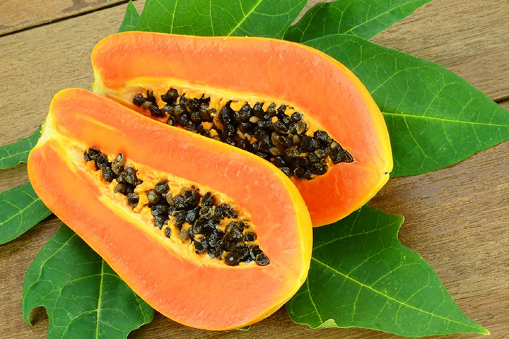

Dairy
- Greek Yogurt
- Almond Milk
- Butter
- Chocolate Ice Cream
- Parmesan Cheese

Vegetables
- Broccoli
- Lettuce
- Tomatoes
- Cucumbers
- Bell Peppers

Fruits
- Strawberries
- Kiwi
- Blueberies
- Mangos
- Papayas 

Condiments
- Italian Dressing
- Adobo
- Alfredo Sauce
- Mayo
- Ranch
Meats
- Chicken Wings
- Beef Steak
- Chicken Cutlets
- Pork Ribs
- Ground Beef